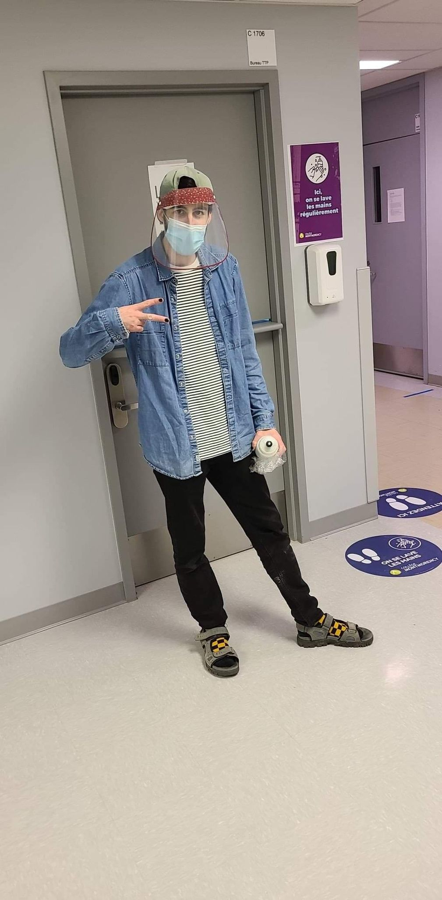
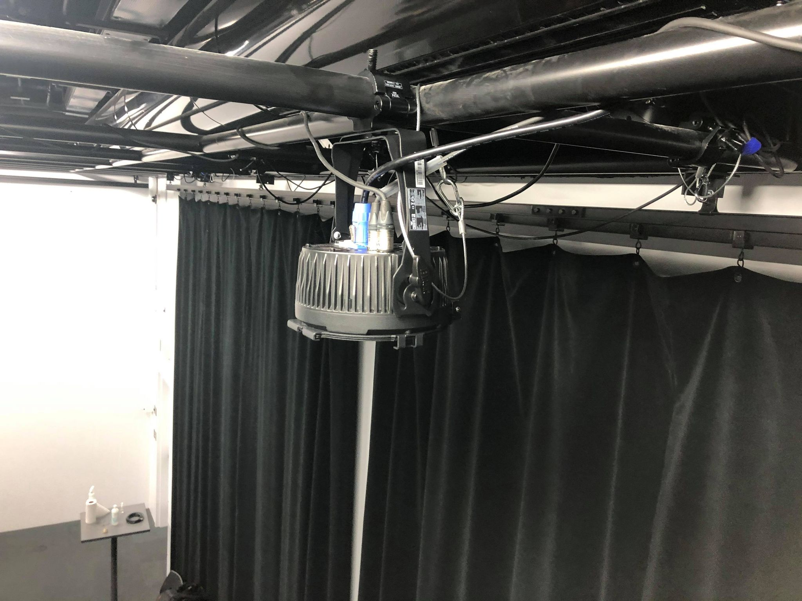
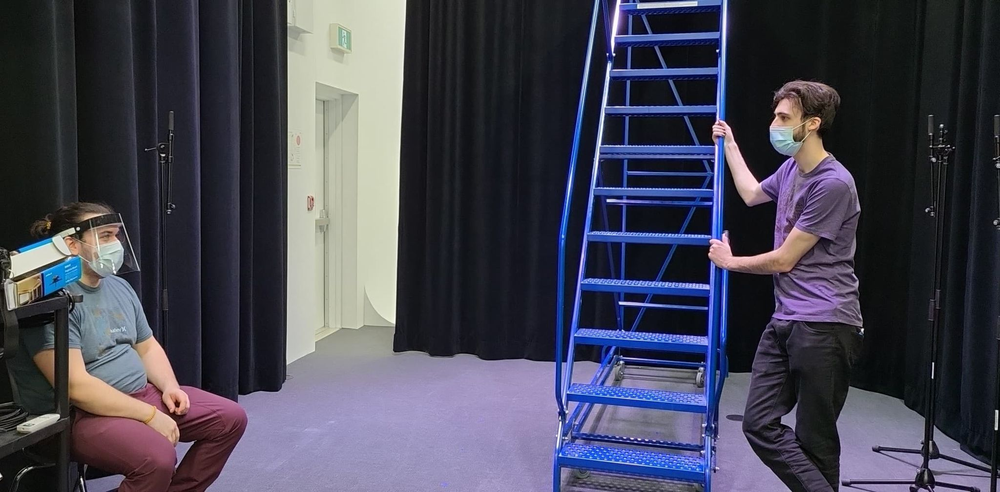
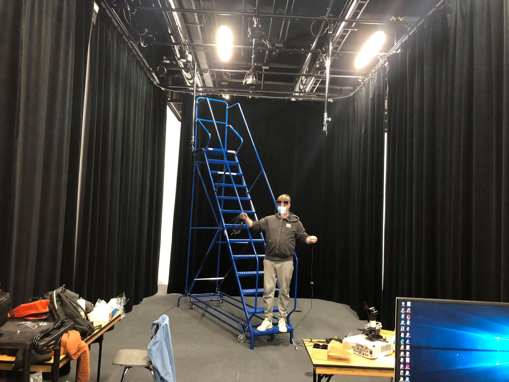
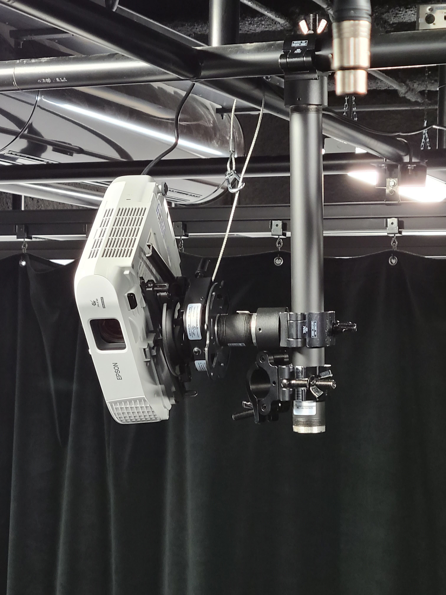
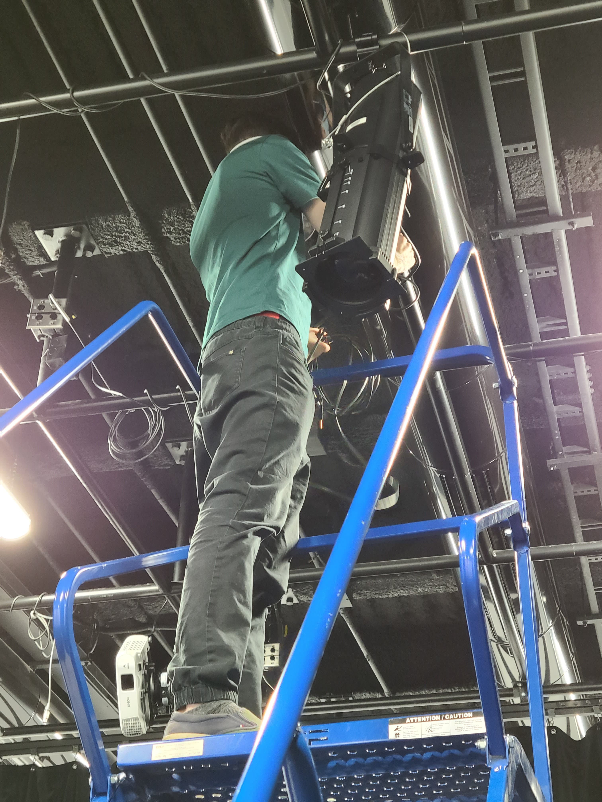
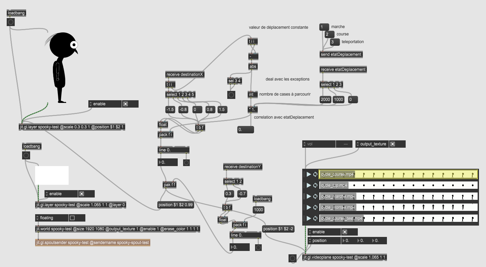
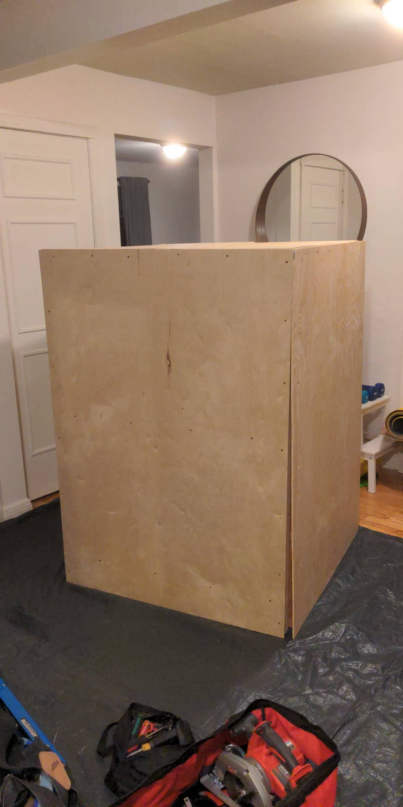
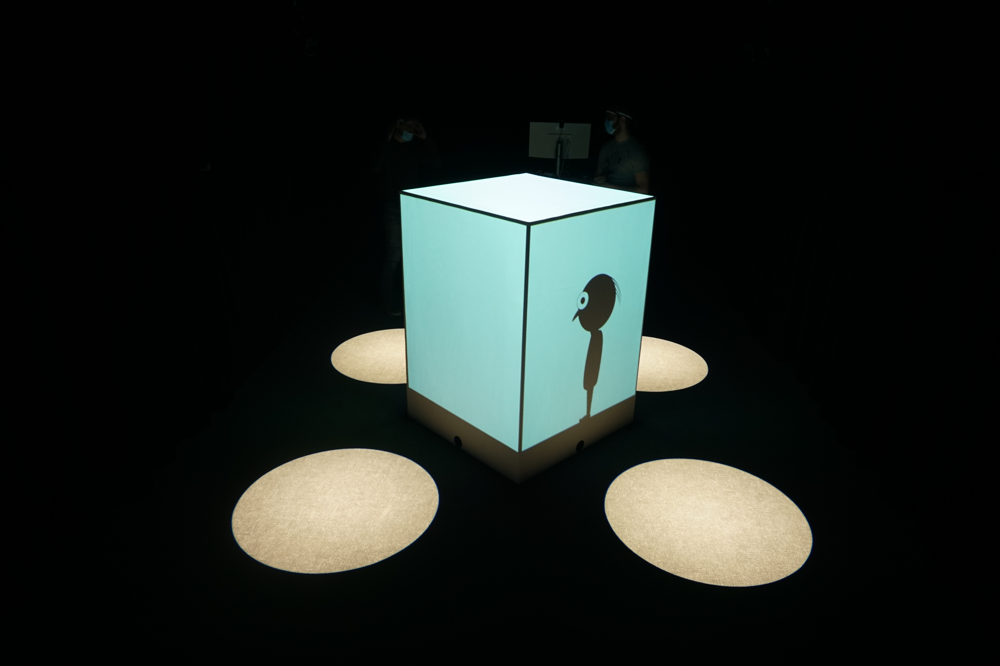

Spooky Tower (Tour Spooky)
Espace virtuel interactif
22 au 25 mars
Accéder au projet
Diffusion en direct
25 mars, 19h à 21h
Assister à la présentation
Résumé du projet :
Spooky Tower (Tour Spooky) est une expérience interactive où les utilisateurs s'approchent d'une tour rectangulaire. Un personnage se déplace librement sur les faces de la tour jusqu'à ce qu'il détecte une présence en face de lui. Il va par la suite fuir la présence en se déplaçant de face en face. Lorsqu'une présence est détectée devant chacune des faces, le personnage s'enfuit au dessus de la tour. Une ambiance sonore ainsi que des bruitages y sont ajoutés. De l'éclairage sera utilisé pour annoncer les emplacement disponibles.
Réalisé par :
 Antoine Allard
Antoine Allard Quentin Lequenne
Quentin Lequenne Félix Jasmin
Félix Jasmin William Racine
William Racine
Galerie d'images :

Journal de création
Semaine 1 - 25 au 29 janvier 2021
Première semaine de cours, un gros retour sur notre projet en revenant des vacances de fêtes. Il y a eu plusieurs rencontres enfin de déterminer quelques paramètres restants.
Nous avons commencé notre préproduction ainsi que nos journaux personnels dans le but de documenter notre projet de A à Z. De plus, pour améliorer notre organisation, nous nous sommes attribué des rôles ainsi que des tâches pour les prochaines semaines.
Pour finir, nous avons mis à jour notre repository sur Github pour correspondre à la méthode de travail présentée en classe.
Semaine 2 - 30 janvier au 5 février 2021
Deuxième semaine de cours, l'équipe est plus que déterminée à commencer le montage de l'expérience. Il est prévu d'aller au grand studio la semaine prochaine.
La préproduction est terminée et prête à être corrigée suite à l'avis des prof. Dès la fin de notre rencontre le mardi, toute l'équipe s'est mise sur cette correction pour avoir une préproduction complète et détaillée.
Des discussions se font dans l'équipe pour décider d'une surface de projection pour la tour, soit du tissu, soit du contreplaqué peinturé.
Semaine 3 - 6 au 12 février 2021
Troisième semaine de cours, la préproduction est terminée et remise, nous pouvons désormais nous attaquer au montage de l'expérience en physique.
{kind=link}
Dès le mercredi, toute l'équipe est présente pour accrocher les lumières, les perches d'extension, les projecteurs et bien plus. De plus, les premiers branchements sont faits pour tester autant l'éclairage que la projection.
 {kind=link}
{kind=link}
Peu d'équipes sont présentes lors de notre présence au grand studio ce qui nous permet de travailler librement sans dérangement.
{kind=link}
Semaine 4 - 13 au 19 février 2021
Quatrième semaine de cours, plus petite semaine de travail dû à plusieurs imprévus dans l'équipe. Nous avons tout de même placé les projecteurs de façon à couvrir les surfaces de manière optimale.
{kind=link}
Le vendredi, nous nous sommes occupés de l'installation des spotlights ainsi qu'un début de projection sur le prototype de la tour
{kind=link}
Semaine 5 - 20 au 26 février 2021
Cinquième semaine de cours, présentation du prototype avec les professeurs. Nous avons été capables de faire une belle diffusion d'une image de référence ainsi qu'un déplacement. En plus, nous avons pu faire une diffusion d'une vidéo, mais le positionnement est à refaire.
Nous avons créé un module de contrôle de lumières pour les spotlights qui déterminent la zone de détection. La Kinect est installée et ajustée pour la détection de mouvement, il nous reste seulement à créer la gestion de données dans Max
{kind=link}
Semaine 6 - 27 février au 5 mars 2021
Sixième semaine de cours, nous avons beaucoup avancé sur la spatialisation des haut-parleurs à l'intérieur de la tour. Ils sont maintenant contrôlables dans Max directement.
De plus, Antoine avance avec la construction de la tour chez lui, les matériaux sont rassemblés et en train d'être peinturés
{kind=link}
Le fichier principal de contrôle et de logique est maintenant presque complet. Il y a le contrôle des lumières, la spatialisation du son, la diffusion vers Madmapper pour la projection, ainsi que la logique de déplacement
Semaine 7 - 6 au 12 mars 2021
Septième semaine de cours, la générale approche à grands pas
La tour est finalement terminée, nous pouvons commencer la projection sur notre tour finale.

La logique continue d'avancer, plusieurs modules sont intégrés pour gérer certaines exceptions
Semaine 8 - 13 au 19 mars 2021
Huitième semaine de cours, la générale est cette semaine, grosse semaine de travail pour tout le monde de l'équipe
L'installation des magic arms pour le support des haut-parleurs ainsi que des caméras de diffusion en direct est maintenant terminée et nous permettre de faire une diffusion en direct sur notre site web spookytower.ca

Voici la présentation de l'expérience lors de la pratique de diffusion le jeudi 18 mars
{kind=link}